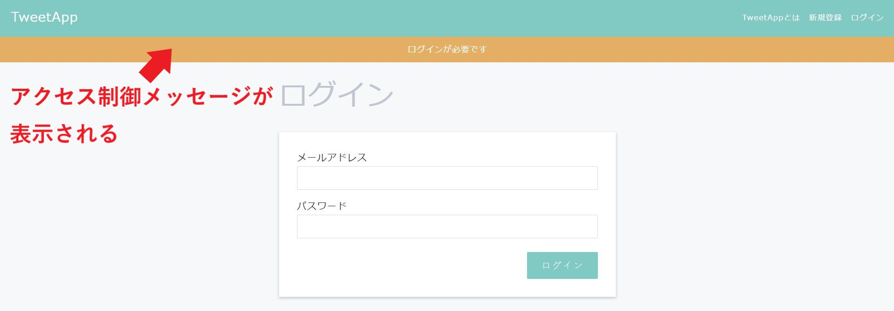
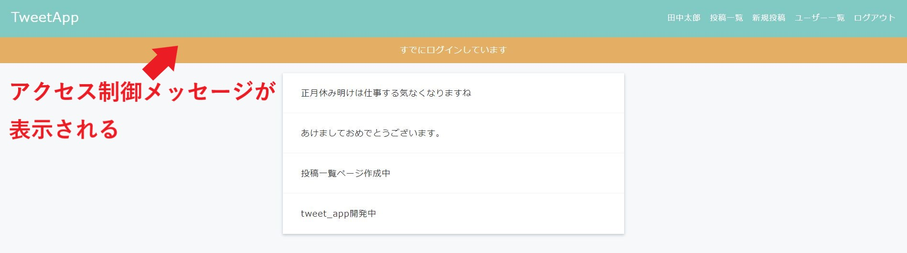
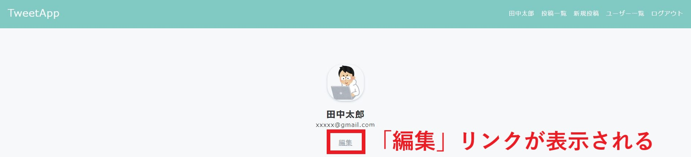
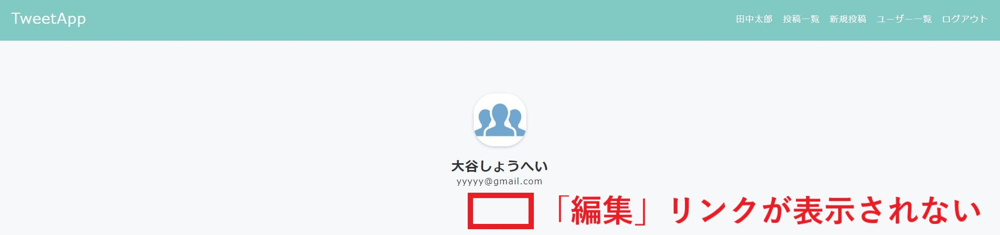
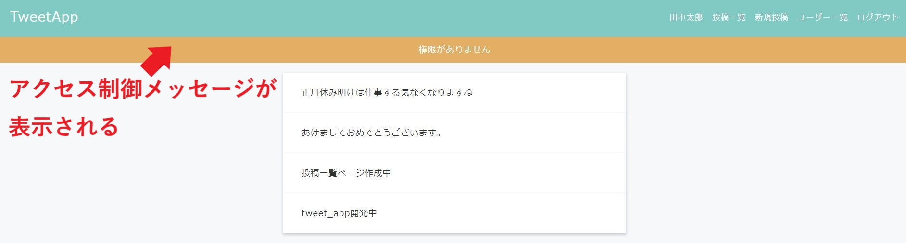

ログイン・ログアウト機能 Ⅱ
制作イメージ
ログイン・ログアウト機能を作成してください。
1. 未ログインユーザーに対するアクセス制御
1-1. 未ログイン状態でアクセス不可URLを直接入力

2. ログインユーザーに対するアクセス制御
2-1. ログイン状態でアクセス不可URLを直接入力

3．ユーザー編集ページへのアクセス制御
3-1. ユーザー詳細ページ_自ユーザー

3-2. ユーザー詳細ページ_他ユーザー

3-3. 他ユーザー詳細ページのURLを直接入力

【未ログインユーザーに対するアクセス制御】
◆未ログインユーザーに対し、下記ページへはURLを直接入力してもアクセスできないようにしてください。
・未ログインユーザー アクセス制限ページ
- 投稿ページ及び機能全て
- ユーザー一覧ページ（users#index）
- ユーザー詳細ページ（users#show）
- ユーザー編集ページ（users#edit）
- ユーザー編集機能（users#update）
◆アクセス制御メッセージは、下記の通りにしてください。
・ログインが必要です
【ログインユーザーに対するアクセス制御】
◆ログインユーザーに対し、下記ページへはURLを直接入力してもアクセスできないようにしてください。
・ログインユーザー アクセス制限ページ
- TOPページ（home#top）
- 新規ユーザー登録ページ（users#new）
- 新規ユーザー登録機能（users#create）
- ログインページ（users#login_form）
- ログイン機能（users#login）
◆アクセス制御メッセージは、下記の通りにしてください。
・すでにログインしています
【ユーザー編集ページへのアクセス制御】
◆ログインユーザーと異なるユーザーの編集ページへアクセスできないよう、「編集」のリンクを非表示にしてください。
◆ログインユーザーと異なるユーザーの下記ページへは、URLを直接入力してもアクセスできないようにしてください。
- ユーザー編集ページ（users#edit）
- ユーザー編集機能（users#update）
◆アクセス制御メッセージは、下記の通りにしてください。
・権限がありません